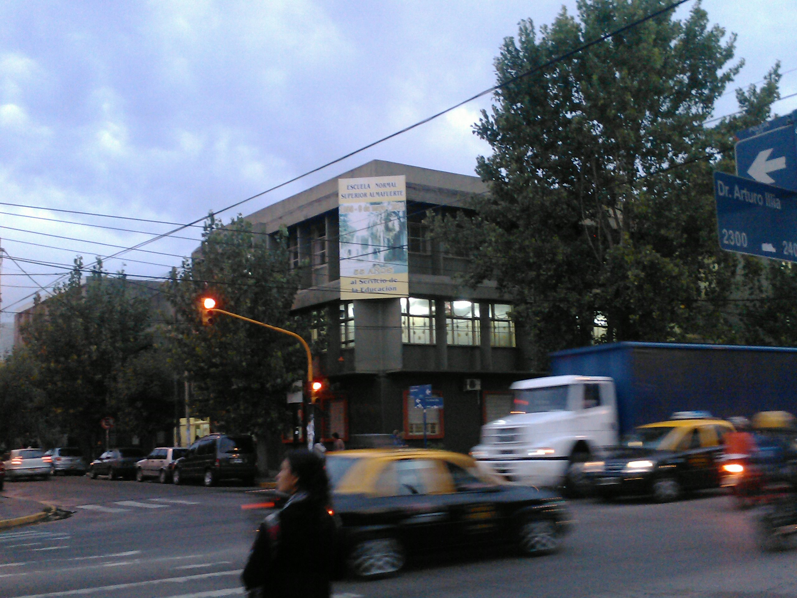

Bachiller con Orientación en Economía y Administración
Instituto de Educación Secundaria - Morón
Competencias Adquiridas
- Comprensión de los procesos económicos y organizacionales básicos.
- Manejo de herramientas informáticas y planillas de cálculo.
- Desarrollo de habilidades de trabajo en equipo y comunicación.
- Capacidad para la resolución de problemas lógicos y matemáticos.
Periodo de Estudio
Fecha de ingreso: Marzo 2013
Fecha de fin de curso: Diciembre 2017
Imágenes de la Institución
